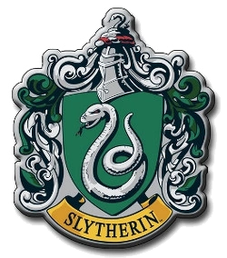
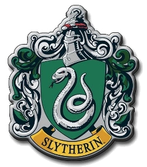

Hogwarts
A Escola de Magia e Bruxaria de Hogwarts, ou simplesmente Hogwarts, é um prestigiado internato britânico de magia para bruxos e bruxas com idades entre onze e dezessete anos. Localizada nas Altas Terras escocesas, aceita estudantes da Grã-Bretanha e da Irlanda. É uma escola pública, financiada pelo Ministério da Magia Britânico. Como a escola não é mapeável, a localização exata dela é desconhecida. Para os trouxas, ela aparenta ser um castelo velho e abandonado. Esse tipo de mecanismo é comum às escolas de magia, que procuram guardar seus métodos de ensino e proteger seus alunos de perigos. A escola foi fundada na Idade Média, aproximadamente no século X, por quatro grandes bruxos da época: Godric Gryffindor, Salazar Slytherin, Helga Hufflepuff e Rowena Ravenclaw. Cada um deles fundou sua respectiva Casa. Bruxos britânicos e irlandeses, ao completarem onze anos, recebem uma carta de aceitação pelo serviço postal de corujas. No entanto, se o bruxo ou bruxa em questão é um nascido trouxa ou mestiço sem conhecimento do mundo dos bruxos, um funcionário da escola visita a criança ou sua família para informá-los de sua herança mágica e do mundo dos bruxos. O lema da escola é Draco Dormiens Nunquam Titillandus, que em latim significa "nunca cutuque um dragão adormecido".


 
